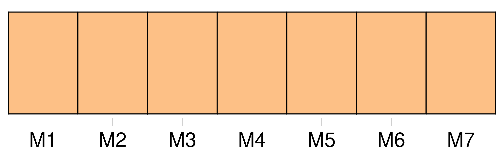

Longueur nb maillons : 22 mentions |
  |
Madame de Hautefort [1 phrases] La noble femme dont [nous] allons retracer la vie n’ appartient point à l’ histoire politique ; elle n’ est point de la famille des hommes d’ état ; elle n’ a point disputé aux deux grands cardinaux leur pouvoir et le gouvernement de la France ; elle a refusé seulement de leur livrer son âme, de trahir pour eux ses amis et sa cause, cette cause qui lui semblait celle de la religion et de la vertu. [2 phrases]
Elle n’ a point laissé de nom dans l’ histoire, et [nous] [qui] entreprenons de la disputer à l’ oubli, si [nous] la mettons à côté de Mme de Chevreuse, ce n’ est pas un parallèle, c’ est bien plutôt un contraste que [nous] voulons établir, pour faire paraître sous ses aspects les plus divers la grandeur de la femme au XVIIe siècle, comme aussi, [nous] l’ avouons, avec le désir et l’ incertaine espérance d’ intéresser à cette fière et chaste mémoire quelques âmes d’ élite çà et là dispersées. [54 phrases]
Ne pouvant les chanter, [nous] les supprimons ; mais voici un couplet d’ une autre chanson dont l’ auteur est inconnu, et qui, ce [nous] semble, peint avec assez de grâce le charme qu’ exerçait Mlle de Hautefort sur l’ humeur chagrine de son royal amant : [28 phrases] Aujourd’hui que [nous] pouvons embrasser le cours entier du XVIIe siècle et mesurer son progrès presque régulier depuis les glorieux commencemens d’ Henri IV jusqu’ aux dernières et tristes années de Louis XIV, il [nous] est bien facile de comprendre et d’ absoudre Richelieu. [Nous] concevons que pour en finir avec les restes. de la société féodale, pour mettre irrévocablement le pouvoir royal au-dessus d’ une aristocratie excessive, mal réglée, turbulente, pour empêcher les protestans de former un état dans l’ état et les faire ployer sous la loi commune, pour arrêter la maison d’ Autriche, maîtresse de la moitié de l’ Europe, pour agrandir le territoire français, pour introduire un peu d’ ordre et d’ unité dans la société nouvelle, pleine de force et de vie, mais où luttaient les élémens les plus dissemblables, il fallait une vigueur extraordinaire, et peut-être pour quelque temps une dictature éclairée, un despotisme national et intelligent. [3 phrases] Mettons [-nous] donc à la place d’ une jeune fille sortie d’ une race féodale, introduite à la cour par la reine-mère et jetée à quinze ans dans celle d’ Anne d’ Autriche. [34 phrases] Mlle de La Fayette en effet finit par aimer Louis XIII ; Mlle de Motteville, qui plus tard devint son amie et reçut ses plus intimes confidences, l’ assure, et [nous] la croyons. [17 phrases] [Nous] pouvons écarter le voile de ce langage incertain, et [nous] ne voyons pas pourquoi La Rochefoucauld, si peu réservé, hélas!! sur un point bien autrement délicat, montre ici quelque embarras à [nous] dire qu’ il devint amoureux de la belle Marie. [3 phrases]
Ce n’ est pas ici d’ ailleurs le temps de parler de ses conquêtes ; celui où [nous] en sommes arrivés n’ était pas la saison des amours, et des choses plus sérieuses et presque tragiques se passaient dans l’ intérieur de la reine. [2 phrases] Après avoir commencé par tout nier, la reine, pressée par Richelieu et par des indices irrécusables, craignant les derniers malheurs, fit de grands aveux, que [nous] connaissons bien aujourd’hui, et qui, tout graves qu’ ils sont déjà, ne devaient pas être complets, car s’ ils l’ eussent été, la reine n’ avait qu’ à faire dire tout simplement à La Porte par le chancelier Séguier, et par une lettre de sa propre main, de déclarer tout ce qu’ il savait, tandis qu’ elle tint une conduite bien différente. [53 phrases] [Nous] n’ y insisterons point, et [nous] nous bornerons à dire que Mlle de Hautefort ne mit point à profit pour sa fortune ce retour de la tendresse du roi. [31 phrases]
» |
La ressource peut être téléchargée sur la page Ortolang
Si vous avez des questions ou vous voyez des erreurs, merci d'envoyer un mail à silvia.federzoni89@gmail.com
Site développé par S. Federzoni (contact)